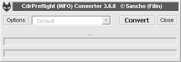
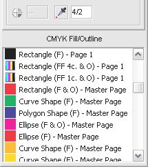
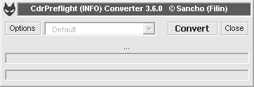
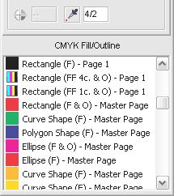

Внимание!!!! В версии 3.5.8 под Х4 обнаружен небольшой баг в Бонусе конвертирования цветовой модели в СМИК, РГБ и ГРЕЙ... У объектов без обводки после обработки, она появляется... причём выглядит это весьма забавно, в том плане что при зуме она меняет свой цвет ))))
colonizator / 18.07.2008, 17:00
Пожелания для следующих версий:
1. Нужен макрос, который ищет в заливках и градиентах процентную точку ниже 5% или по желанию. Поиск в чистых заливках или градиентах.
2. Отлавливание оверпринта белого.
3. Поиск шрифтов, которые окрашены более чем в 1 цвет.
4. Поиск кегля текста менее установленного, например менее 6 пт.
5. Показывать все найденные недостатки в окне типа: критические замечания или еще как то обозвать.
Sancho / 18.07.2008, 17:31/17:18
1. Это уже давно задумано и даже больше
2. Есть просто отлов оверпринта... его можно всегда просмотреть в списке
3,4. Записал на заметку
5. Сначало наглядно попользуйтесь макросом, а потом уже поговорим по этому поводу
По поводу текстовых объектов хотел уточнить... Если искать в них составной цвет то ниже какого кегдя должен быть шрифт? Я так понимаю надо какой то общий список недопустимых текстовых объектов... суда и мелкий кегль и составной цвет для мелких... на какие свойства ещё проверять текст????
Есть в задумке ещё внедрить проверку на деформацию шрифта... но незнаю надо оно вообще или нет??? да и вообще получится или нет...
colonizator / 22.07.2008, 18:05
А можно обе позиции дать в настройке, т.е. например:
1. Поиск составного цвета в шрифтах. 2. Поиск шрифта ниже (для примера: 5 пт.) 3. А в шрифте еще можно сделать сброс параметров шрифта или сразу переход в настройку (например Position: Superscript вариант отключения этой позиции или редактирования).
Zivotnoe / 23.07.2008, 15:40
Про размер шрифта: этот вопрос сугубо индивидуальный, зависит от вывода - ситипи или фотонабор и возможностей машины; мы например и 2 пункта печатали читабельно. так что если делать, то надо чтоб была возможность настройки величины шрифта. Про цвет шрифта: хотелось бы чтобы появилась возможность отслеживать цвет текста отличный от 0-0-0-100 (ведь в большинстве случаев используется такой цвет букав).
Sancho / 24.07.2008, 12:33
Вот что сделано на данный момент и тестируется
Так выглядит окно конвертера 
CdrPreflight 3.6.0 (INFO) + Оптимизирован код + В ИНФО добавлен параметр "Small Font Size", порог настраивается в опциях + В ИНФО добавлен параметр "Color in Text" Ищет составные (больше одного) цвета в шрифте при маленьком кегле (порог настраивается в опциях - "Color Font Size") + Из ИНФО убраны "Artistic Text" и "Paragraph Text" + "ArtisticMedia break" теперь доступно и работает + В конвертер добавлена настройка "Overprint Black for Bitmaps" С возможностью настройки Overprint Limit + cdrColorPantone, cdrColorSpot, cdrColorPantoneHex теперь конвертируются следующим образом: > RGB > CMYK + В конвертер добавлена настройка "Lens To Bitmap" Конвертирует все линзы и прозрачности в Bitmap + Убраны "Do not process" из настроек конвертора + В настройки добавлена возможность выбора единиц измерения между "millimeters" и "points"
CdrPreflight 3.5.9 (INFO) + Небольшие изменения в коде + Полностью переписан конвертер! + В настройки конвертера добавлен параметр "Bitmap Break Link" + В конверторе для обводки у объектов Texts применяется значение Miter Limit = 45 + Добавлен параметр "Color Control" На данный момент он ограничивается поиском цветов СМИК с низкой процентовкой компонентов... например: С:100 М:100 Y:0 К:3 Минимально допустимое значение можно задать в настройках - "minColor" + Изменён диалог Опций
вообще конечно поиск маленького кегля это хорошо, но на пвывод отдаются файлы (в большинстве своем) где текст уже в кривых. поэтому текста как такового в файле нет. есть набор кривых. как интересено в этом случае будет реализован поиск составного цвета?
Sancho / 24.07.2008, 12:50
В ситуации со сривлёнными шрифтами трудно найти выход... Можно попробовать добавить поиск кривых с большим числом узлов, но это будет работать 50/50
Sancho / 29.07.2008, 10:34
Вот сделал отоброжение цвета... 
Это тест-вариант... пока работает только с юниформ заливкой


В версии 3.5.8 под Х4 обнаружен небольшой баг в Бонусе конвертирования цветовой модели в СМИК, РГБ и ГРЕЙ... У объектов без обводки после обработки, она появляется... причём выглядит это весьма забавно, в том плане что при зуме она меняет свой цвет ))))
1. Нужен макрос, который ищет в заливках и градиентах процентную точку ниже 5% или по желанию. Поиск в чистых заливках или градиентах.
2. Отлавливание оверпринта белого.
3. Поиск шрифтов, которые окрашены более чем в 1 цвет.
4. Поиск кегля текста менее установленного, например менее 6 пт.
5. Показывать все найденные недостатки в окне типа: критические замечания или еще как то обозвать.
2. Есть просто отлов оверпринта... его можно всегда просмотреть в списке
3,4. Записал на заметку
5. Сначало наглядно попользуйтесь макросом, а потом уже поговорим по этому поводу
По поводу текстовых объектов хотел уточнить...
Если искать в них составной цвет то ниже какого кегдя должен быть шрифт?
Я так понимаю надо какой то общий список недопустимых текстовых объектов... суда и мелкий кегль и составной цвет для мелких... на какие свойства ещё проверять текст????
Есть в задумке ещё внедрить проверку на деформацию шрифта... но незнаю надо оно вообще или нет??? да и вообще получится или нет...
1. Поиск составного цвета в шрифтах.
2. Поиск шрифта ниже (для примера: 5 пт.)
3. А в шрифте еще можно сделать сброс параметров шрифта или сразу переход в настройку
(например Position: Superscript вариант отключения этой позиции или редактирования).
Про цвет шрифта: хотелось бы чтобы появилась возможность отслеживать цвет текста отличный от 0-0-0-100 (ведь в большинстве случаев используется такой цвет букав).
Так выглядит окно конвертера

CdrPreflight 3.6.0 (INFO)
+ Оптимизирован код
+ В ИНФО добавлен параметр "Small Font Size", порог настраивается в опциях
+ В ИНФО добавлен параметр "Color in Text"
Ищет составные (больше одного) цвета в шрифте при маленьком кегле
(порог настраивается в опциях - "Color Font Size")
+ Из ИНФО убраны "Artistic Text" и "Paragraph Text"
+ "ArtisticMedia break" теперь доступно и работает
+ В конвертер добавлена настройка "Overprint Black for Bitmaps"
С возможностью настройки Overprint Limit
+ cdrColorPantone, cdrColorSpot, cdrColorPantoneHex
теперь конвертируются следующим образом: > RGB > CMYK
+ В конвертер добавлена настройка "Lens To Bitmap"
Конвертирует все линзы и прозрачности в Bitmap
+ Убраны "Do not process" из настроек конвертора
+ В настройки добавлена возможность выбора единиц измерения
между "millimeters" и "points"
CdrPreflight 3.5.9 (INFO)
+ Небольшие изменения в коде
+ Полностью переписан конвертер!
+ В настройки конвертера добавлен параметр "Bitmap Break Link"
+ В конверторе для обводки у объектов Texts
применяется значение Miter Limit = 45
+ Добавлен параметр "Color Control"
На данный момент он ограничивается поиском цветов СМИК
с низкой процентовкой компонентов... например: С:100 М:100 Y:0 К:3
Минимально допустимое значение можно задать в настройках - "minColor"
+ Изменён диалог Опций

Это тест-вариант... пока работает только с юниформ заливкой
Страницы